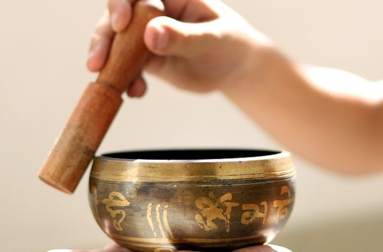

Singing Bowls
Singing bowls, also known as Tibetan singing bowls, are ancient, handcrafted metal bowls that produce a resonant sound when struck or circled with a mallet. Traditionally made from a mixture of metals such as copper, bronze, and sometimes silver or gold, these bowls come in various sizes and are often used in meditation, rituals, and healing practices. The sound produced by a singing bowl is a unique blend of harmonic overtones, which are believed to have therapeutic effects on the mind and body. When gently struck or rubbed around the rim with a mallet, they produce a soothing, vibrational sound that promotes relaxation and mindfulness. Singing bowls are intricately made by skilled artisans, often featuring delicate engravings or symbols that reflect Nepal's cultural and spiritual heritage. These bowls have been used for centuries, and their distinct tones are thought to resonate with the energy centers of the body, aiding in emotional and physical healing.

Significance of Nepali Singing Bowls
Nepali singing bowls hold great cultural and spiritual significance, particularly in Buddhist and Newar traditions. They are seen as tools for healing and meditation, with the sound vibrations believed to balance the body’s energy, promote deep relaxation, and clear negative emotions. The use of singing bowls is rooted in ancient practices, where they were traditionally used in monasteries for meditation and spiritual rituals, guiding individuals into a deeper state of mindfulness. Beyond their practical use, singing bowls are also symbols of peace, harmony, and spiritual awakening. Their handcrafted nature reflects the artistic and spiritual craftsmanship passed down through generations in Nepal. Today, singing bowls are not only revered for their therapeutic benefits but also appreciated for their cultural value, serving as an important part of Nepal's rich heritage in sound healing and meditation. As they continue to be used worldwide, these bowls preserve and transmit the deep spiritual traditions of Nepal to new generations and cultures.